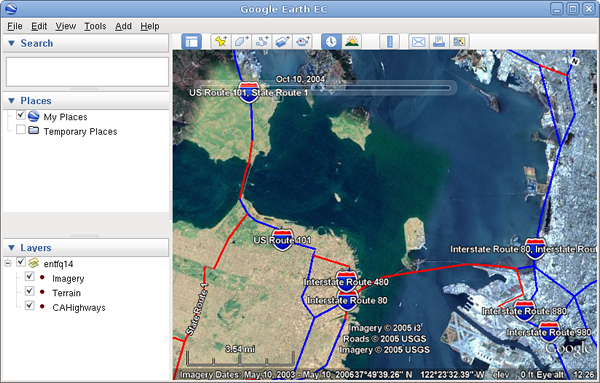

Google Earth Enterprise Documentation Home | Fusion tutorial
Building a Historical Imagery Project
To build a historical imagery project:
-
Follow the steps in Defining and Building Resources to define and build the following:
Name
(Resources/Imagery/...)Acquisition Date Provider Mask Source file BlueMarble Any date. The date of the base image does not affect historical imagery browsing. NASA Imagery No Mask bluemarble_4km.tifSFBayAreaLanSat_20021010 2002-10-10 USGS Imagery Auto Mask
Tolerance: 2
Default for all other mask values.usgsLanSat.tifi3_15Meter_20041010 2004-10-10 i3 Auto Mask
Default values.i3SF15-meter.tifSFHighResInset_20061010 2006-10-10 USGS Imagery Auto Mask
Default values.usgsSFHiRes.tif - Open a new Imagery Project and add each of the image resources to the project:
- Resources/Imagery/BlueMarble
- Resources/Imagery/SFBayAreaLanSat_20021010
- Resources/Imagery/i3_15Meter_20041010
- Resources/Imagery/SFHighResInset_20061010
- Select the Support Historical Imagery checkbox.
- Select File > Save. Enter Projects/Imagery/SFBayAreaHistorical as the name of your project, and click Save.
- Build the SFBayAreaHistorical project.
- Create a new Earth Database and add the SFBayAreaHistorical project.
- Save the new database as Databases/SFBayAreaHistorical.
- Build and push the database to GEE Server, then publish it on GEE Server to the default Publish point.
- Launch Google Earth EC.
- Enter or select the host name or IP address of your server in the Server field, and specify the Publish point that you selected when you published your map database.
For example, if you specify SFBayAreaHistorical-v001, it will be accessible from myserver.mydomainname.com/SFBayAreaHistorical-v001.
- Zoom in to the San Francisco Bay Area.
- Select the Historical Imagery toolbar button to display a time slider. The time slider allows you to move the view through time.
The date of the base image in a historical imagery project, in this case, BlueMarble, is not included and does not impact historical imagery browsing.
The following two screens show how this project is displayed in the Google Earth
EC client. Notice the timeslider is visible and the differences between the imagery
dates and content.
